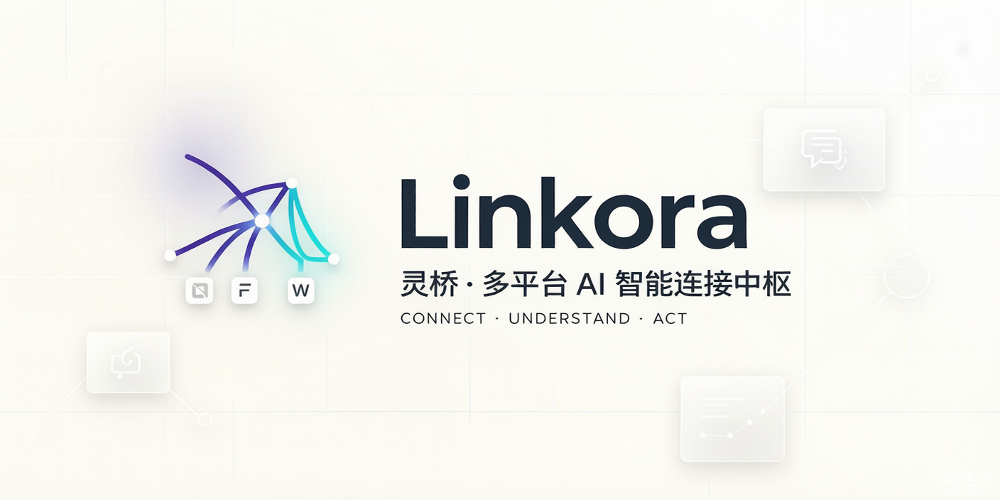
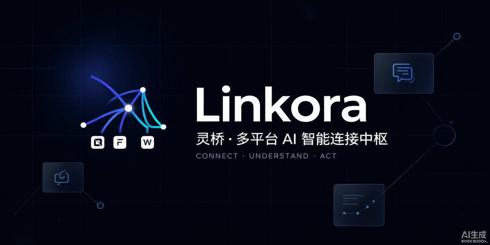
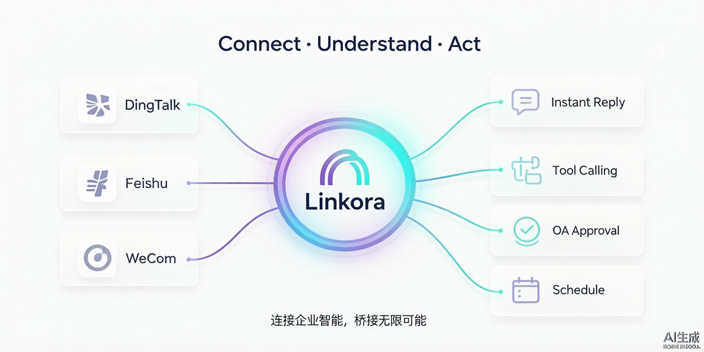
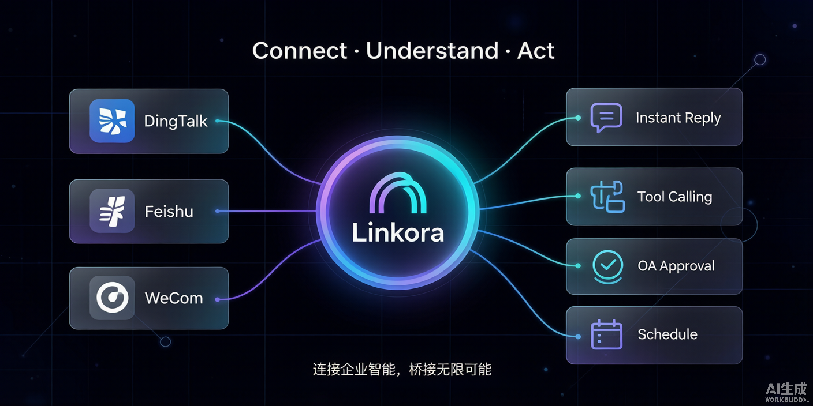

不是只会聊天的机器人。灵桥把知识、工具、规则与真人协作编织进同一次对话。
通读公司文档与历史会话，向量检索命中即注入上下文，回答有出处、可引用。
单一真源的 Tool Calling 清单：查考勤、建待办、发通知、搜消息……真的动手办事，而非只给建议。
39 类意图分流，规则命中直接走确定性路径，LLM 只处理该它处理的模糊部分。
写操作需确认、敏感动作可审批。双重校验门控确保真人沟通期间 AI 绝不穿插。
15 个页面、161 端点。会话、知识库、工具、审批全在浏览器里可查、可调、可观测。
钉钉 / 飞书 / 企微各自独立数据库、独立轮询器，数据不串台，可按平台独立启停。
从消息进来到回复发回，每一步都可观测、可干预。全过程在 Web 管理台留痕。


钉钉、飞书、企业微信分别适配、独立数据库、独立轮询器——数据物理隔离，互不影响。
深度适配钉钉机器人 / 工作通知，支持单聊、群聊与审批流。
独立数据库对接飞书机器人能力与通讯录，知识检索与工具调用原生打通。
独立数据库企业微信应用消息收发，适配内部协作场景与私有部署。
独立数据库这是灵桥和「会抢话的机器人」最大的区别。两层门控确保真人介入的对话里，AI 不再重复回复、不再浪费 Token。
克隆仓库、填好配置、一条命令拉起。数据全部留在你自己的机器或内网。
架构、设计、工具、API、RAG、意图、部署与开发——开发者需要的信息都在这里。